Plataforma Principal
Cómo construí Marea Alta: de la Biblia Transmedia a una web interactiva por capítulos.
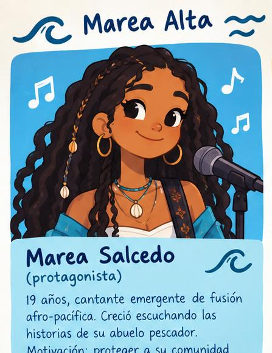
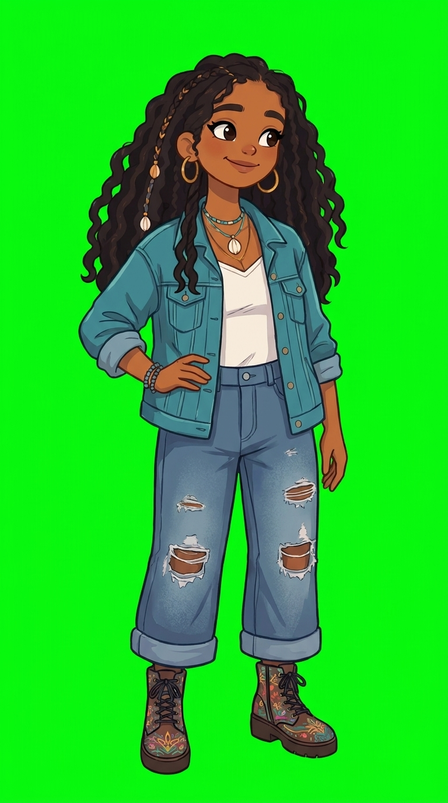
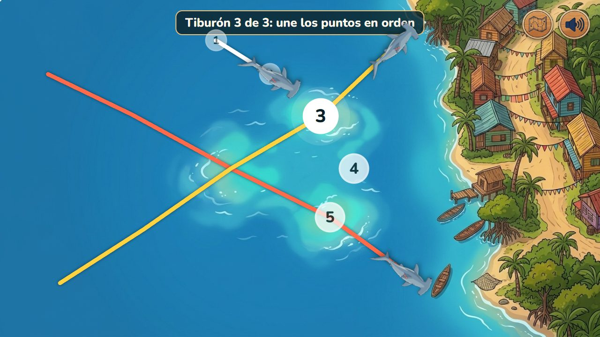
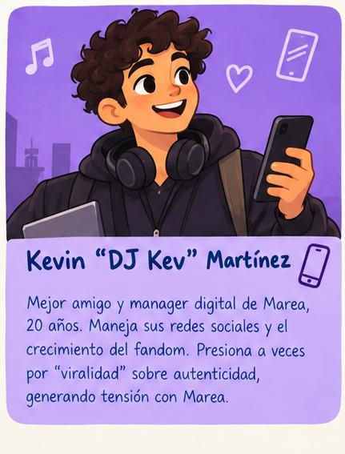
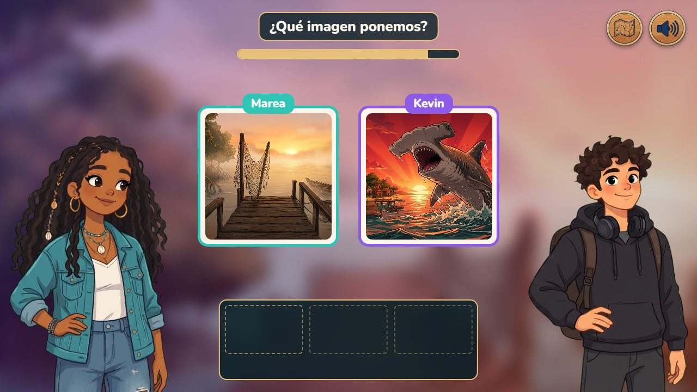
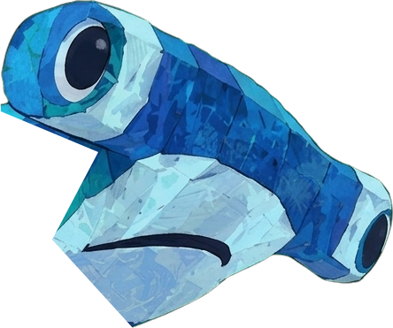
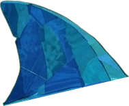
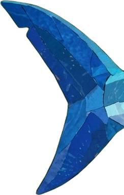
la cachuda, en piezas6 capítulos
7 minijuegos
¡quitar el verde!
Cómo construí Marea Alta: de la Biblia Transmedia a una web interactiva por capítulos.
Marea tiene 19 años, canta y vive en un pueblo de pescadores del Pacífico chocoano. Cuando la cachuda, el tiburón martillo de las historias de su abuelo, empieza a desaparecer, convierte su música en la voz de toda su comunidad.
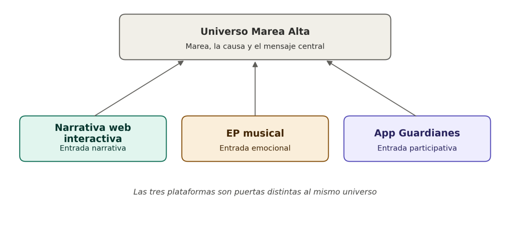
Una web del universo de Marea con un juego de seis capítulos adentro, un minijuego en cada uno.
josuegallego.github.io/marea-alta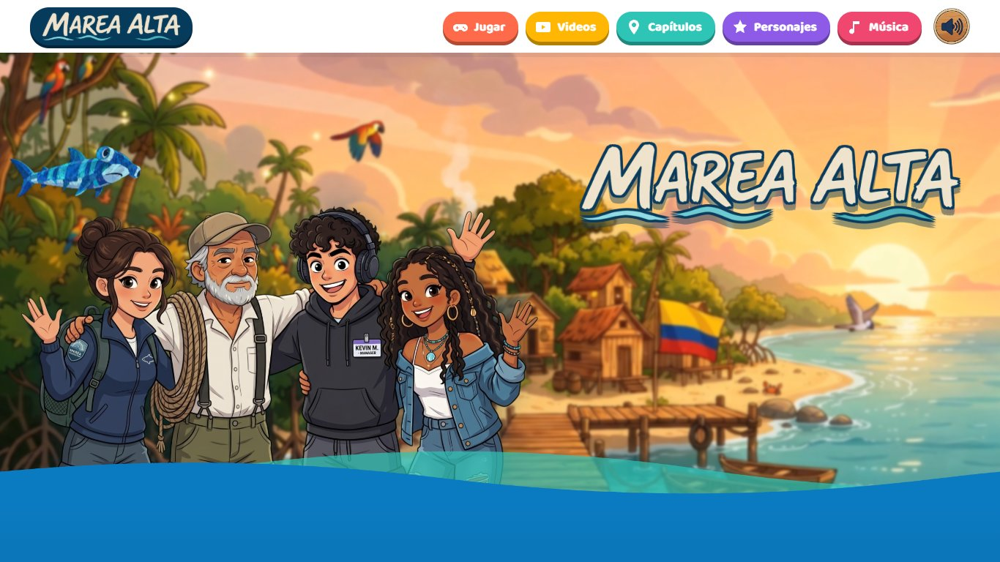
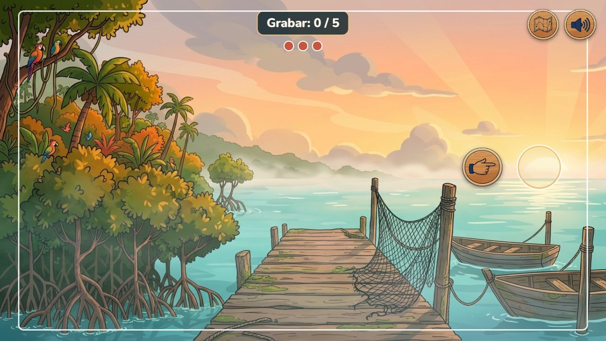
1Grabar el pueblo y remar con el abuelo.
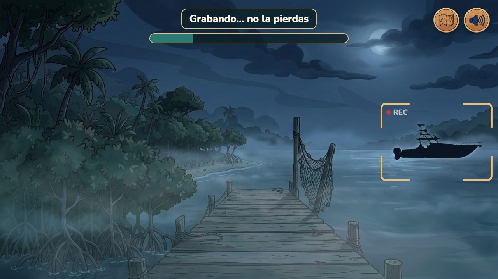
2Seguirla de noche con el celular.
¿Lo real de Marea o lo viral de Kevin? El final cambia.
Trazar las rutas de tres tiburones.
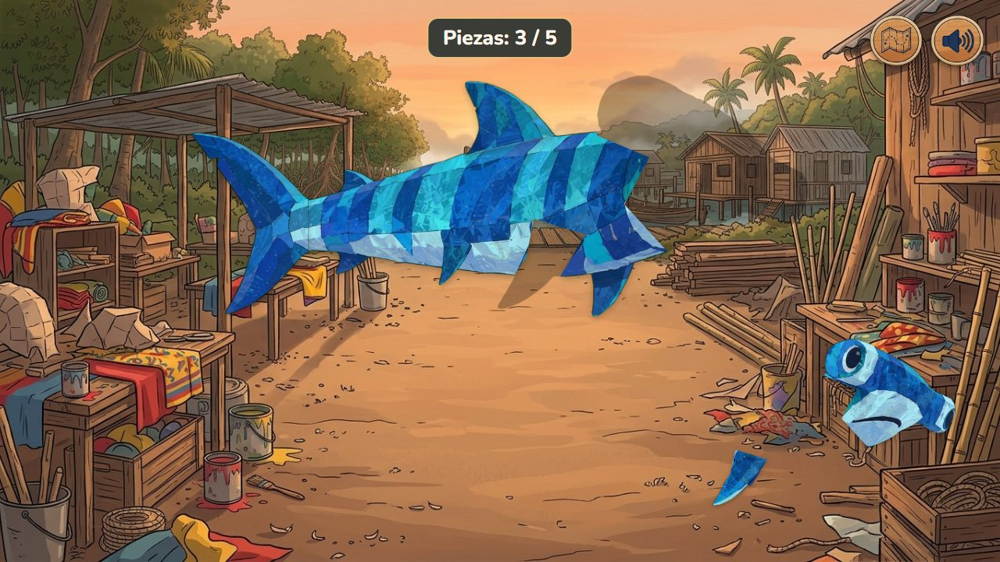
5La figura de la comparsa, con los vecinos.
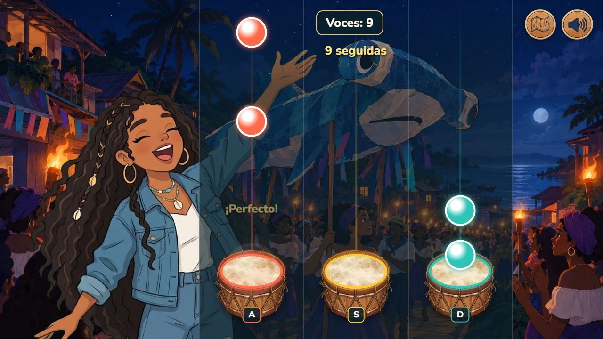
6Tocar los tambores con la canción.
La música y el mar cuentan parte de la historia.
En la portada de la web, sección «¡A jugar!». En celular, gíralo de lado.
Antes de cada minijuego te dice qué hacer.
Cada uno desbloquea el siguiente. Tu avance se guarda.
De la Biblia Transmedia al juego.
Cada personaje tiene su color: turquesa para Marea, naranja de atardecer para Efraín, azul para la Dra. Ríos y morado para Kevin.
Toca cada ficha de la Biblia para ver al personaje en el juego.
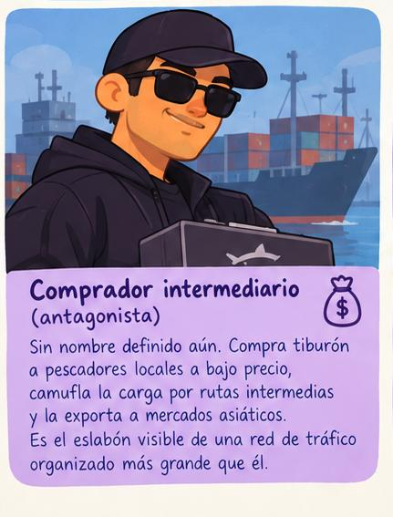
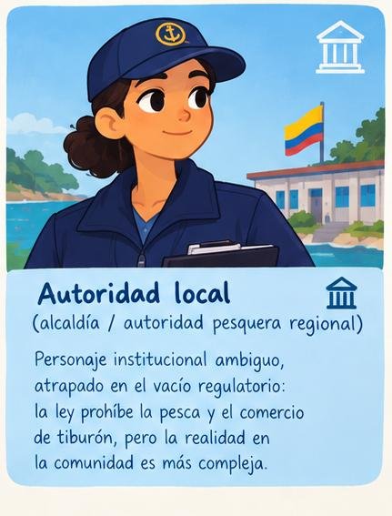
El comprador intermediario y la autoridad local siguen en la Biblia. Entran al juego en la próxima versión.
Las herramientas de imagen no entregan fondos transparentes, así que pedí cada personaje sobre verde y lo recorté.
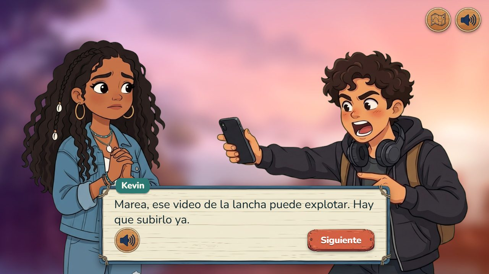
Una sola ilustración, cortada en cinco piezas que encajan exacto. En el capítulo 5 las armas tú.
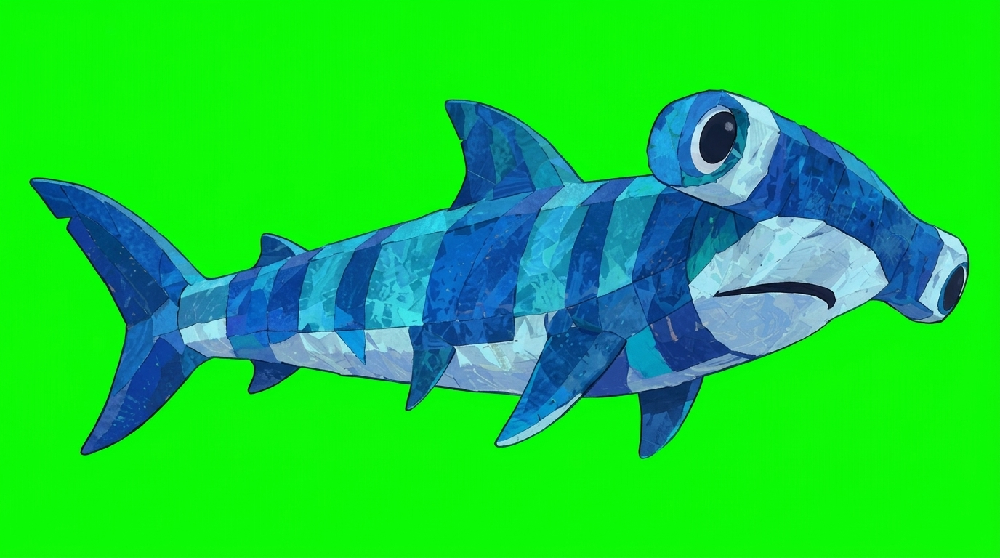
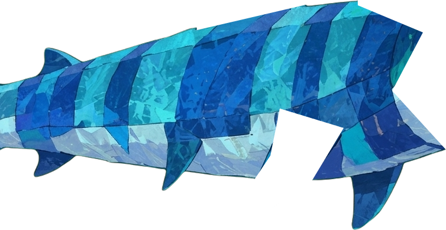
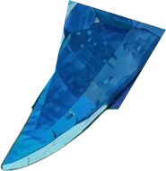
Producida con Google Flow Music. Mi parte fueron los arreglos de la letra y los ritmos del Pacífico. El minijuego final sale de esta canción: del 0:39 al 1:17, cada nota cae sobre un golpe.
Tipografías Baloo 2 y Nunito (Google Fonts) · Logos de Simple Icons (CC0); las marcas pertenecen a sus dueños · Inspirado en el Festival de la Cachuda (Fundación Malpelo y Colectivo Florece)